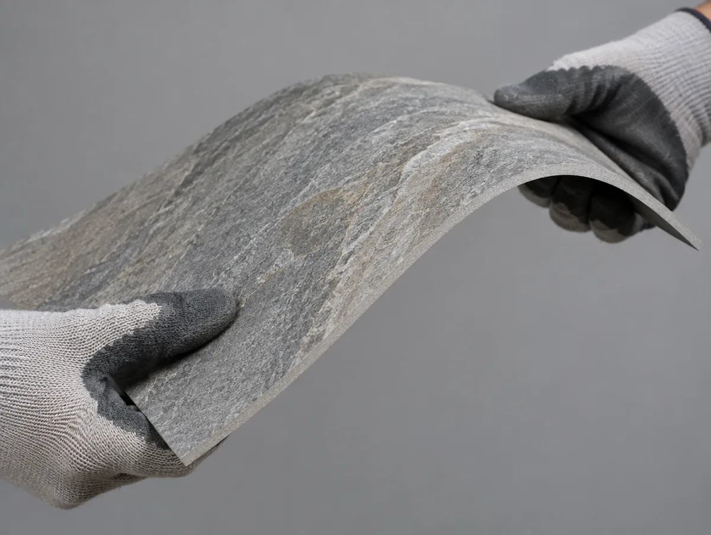

돌처럼 보이고,
종이처럼 휩니다.
아르길로는 점토와 광물 분말을 얇게 성형해 고온 소결한 연질 외장재입니다. 영어권에서 MCM이라 부르는 금속복합패널과는 이름만 같을 뿐 다른 소재입니다.
Composition
네 겹, 3밀리미터
표면의 질감층부터 뒷면의 접착층까지 네 겹이 한 장을 이룹니다. 두께가 3밀리미터 안팎이라 기존 타일이나 벽지 위에 그대로 덧붙일 수 있고, 무게는 같은 면적 타일의 4분의 1입니다.
질감 표면층UV 코팅 · 색상 안정
점토·광물 소결층불연 성능의 본체 · 2.0mm
유연 섬유 보강층곡면 추종 · 균열 억제
접착 바탕층시멘트계 유연 접착제와 결합
같은 이름, 다른 소재
설계자와 감리가 가장 자주 묻는 질문입니다. "MCM이면 복합패널 품질인정 대상 아닌가요?"
ARGILO · 점토계 MCM
Modified Clay Material
- 구성
- 점토 · 광물 분말 · 섬유 보강
- 두께
- 2.5~4mm
- 무게
- 약 4~5 kg/㎡
- 시공
- 접착제 · 칼 재단 · 곡면 가능
- 국내 기준
- 단일 판 — 제품별 시험성적서로 성능 확인
일반 MCM · 금속복합패널
Metal Composite Material
- 구성
- 알루미늄 스킨 2장 + 심재
- 두께
- 3~5mm
- 무게
- 약 5.5~7.5 kg/㎡
- 시공
- 절곡 · 프레임 고정
- 국내 기준
- 복합자재 — 심재 성능 · 실물모형시험 등 별도
※ 단열재 등 다른 재료와 결합해 외벽을 구성하면 아르길로도 전체 구성의 실물모형시험이 필요할 수 있습니다. 최종 판단은 설계자·감리 확인이 필요합니다.
성능 근거는 둘로 나눠 적습니다
국내 시험성적서와 제조사의 해외 인증은 다른 것입니다. 섞어 쓰지 않습니다.
0국내 성적서 보유 제품
0외부용 성적서 보유 제품
0국내 성적서 확인 중
EN 13501-1제조사 해외 인증 규격 (참고)
Where it goes
실내 벽에서 외벽까지
거실 · 침실 아트월벽지 위 프라이머 후 하루 시공
욕실 · 습식줄눈 없이 밀착, 타일 위 덧방
기둥 · 곡면반지름 150mm까지 감싸기
상업 공간카운터 · 로비 · 복도 포인트월
외벽 덧방외부용 성적서 제품 · 메쉬 보강
공공 · 교육준불연 이상 + 품질관리서 제출
Supply
이 사이트는 이 운영합니다. 제품 이미지와 카탈로그 가운데 제조사 제공분은 캡션에 출처를 표기합니다.